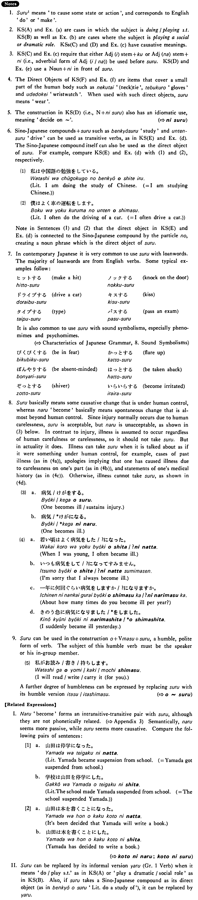

する (1) (B. 428)
- (ksa).
- 中山さんはテニスをする・します。
- Mr. Nakayama plays tennis.
- (ksb).
- リーズさんは英語の先生をしている・います。
- Mr. Leeds is an English teacher.
- (ksc).
- 先生はテストを易しくした・しました。
- The teacher made his test easy.
- (ksd).
- 木口は息子を医者にした・しました。
- Kiguchi caused his son to become a physician.
- (kse).
- 私は中国語を勉強している・います。
- I am studying Chinese.
- (ksf).
- 京子は奇麗なスカーフをしている・います。
- Kyoko is wearing a beautiful scarf.
- (a).
- 日本人は大抵土曜日も仕事をする。
- The Japanese usually work on Saturdays, too.
- (b).
- ビルはハムレットをするつもりだ。
- Bill is going to play Hamlet.
- (c).
- 陽子は部屋を奇麗にした。
- Yoko made her room clean.
- (d).
- 僕はよく車を運転します。
- I often drive a car.
- (e).
- 一男はアメリカ人を妻にした。
- Kazuo made a wife of an American.
- (f).
- いいネクタイをしているね。
- You’re wearing a nice tie, aren’t you?
